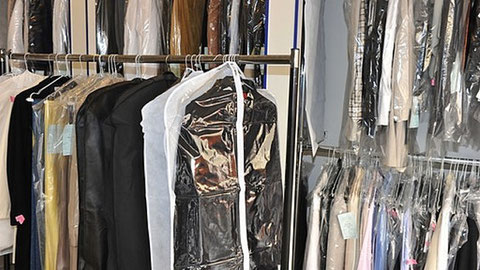

Odijela i košulje
Sakoi, hlače i košulje, očišćeni i opeglani, spremni za posao ili svečanu priliku.
Eko kemijska čistionica „Marcel” u Ulici kralja Zvonimira 75. Donesite odijela, košulje, svečane haljine, vjenčanice, kapute, krzno ili kožu, a mi ćemo ih vratiti čiste i uredne.
| Ponedjeljak | 8–14 · 17–19 |
| Utorak | 8–14 · 17–19 |
| Srijeda | 8–14 · 17–19 |
| Četvrtak | 8–14 · 17–19 |
| Petak | 8–14 · 17–19 |
| Subota | 10–13 |
| Nedjelja | zatvoreno |
Na šalteru u Zvonimirovoj primamo odjeću za kemijsko čišćenje i peglanje. Ovo su komadi koje nam klijenti najčešće donose.
Sakoi, hlače i košulje, očišćeni i opeglani, spremni za posao ili svečanu priliku.
Osjetljive tkanine i veliki, slojeviti komadi poput vjenčanica.
Zimski kaputi i jakne, sa svim mrljama koje donese sezona.
Krzno traži poseban pristup. Prije preuzimanja zajedno pogledamo stanje komada.
Kožni komadi i torbe, uključujući one od brušene kože.
Recite nam što je i kada je nastalo. Tako lakše odaberemo pravi postupak.

„Marcel” je kvartovska kemijska čistionica na Zvonimirovoj, odmah prepoznatljiva po žutom natpisu iznad izloga. Radimo kao eko čistiona, a čistionica se izjašnjava kao tvrtka u ženskom vlasništvu.
Najljepše o nama govore klijenti: u recenzijama najčešće spominju ljubazne gospođe na šalteru, uklonjene mrlje i odjeću spremnu na vrijeme.
Na šalter u Zvonimirovoj 75, pon – pet 8–14 i 17–19 ili subotom 10–13.
Pogledamo materijal i mrlje te vam kažemo kada komad možete preuzeti.
Odjeća vas čeka očišćena i opeglana, na vješalici i u zaštitnoj foliji.
„Najbolja čistiona u gradu, izuzetno ljubazne i stručne gospođe. Došla sam sa svijetlobež torbom od brušene kože s velikom mrljom, napravili su čudo, torba je kao nova.”
„Donijela sam odijelo, košulju i svečanu haljinu, a sve je bilo očišćeno i spremno u roku od 3 dana. Odjeća je vraćena uredna i odlično očišćena.”
„Donijela sam svoju bundu od činčilinog krzna, kao i kaput, i ostala sam zaista oduševljena rezultatom. Uspjeli su ukloniti čak i tvrdokorne mrlje koje nijedna druga čistionica prije njih nije uspjela očistiti.”
„Stručni i ljubazni uskočili u zadnji tren za pomoć oko vjenčanice – svaka preporuka.”
Od ponedjeljka do petka od 8 do 14 i od 17 do 19 sati, subotom od 10 do 13 sati. Nedjeljom ne radimo.
U Ulici kralja Zvonimira 75 u Zagrebu, u prizemlju zgrade sa žutim natpisom KEMIJSKA ČISTIONICA »MARCEL« iznad izloga.
Da. Klijenti nam donose bunde od krzna, kožne torbe, svečane haljine i vjenčanice. Prije preuzimanja pogledamo komad i kažemo vam što se može napraviti.
Rok i cijena ovise o komadu i materijalu. Dogovaramo ih na šalteru pri predaji ili telefonom na 01 4651 009.
Uz ulicu je parkiralište pod naplatom, a u blizini je i garaža pod naplatom.